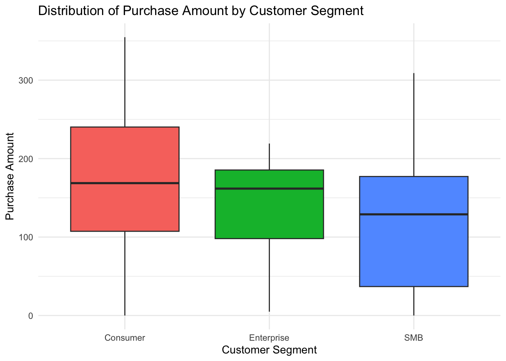
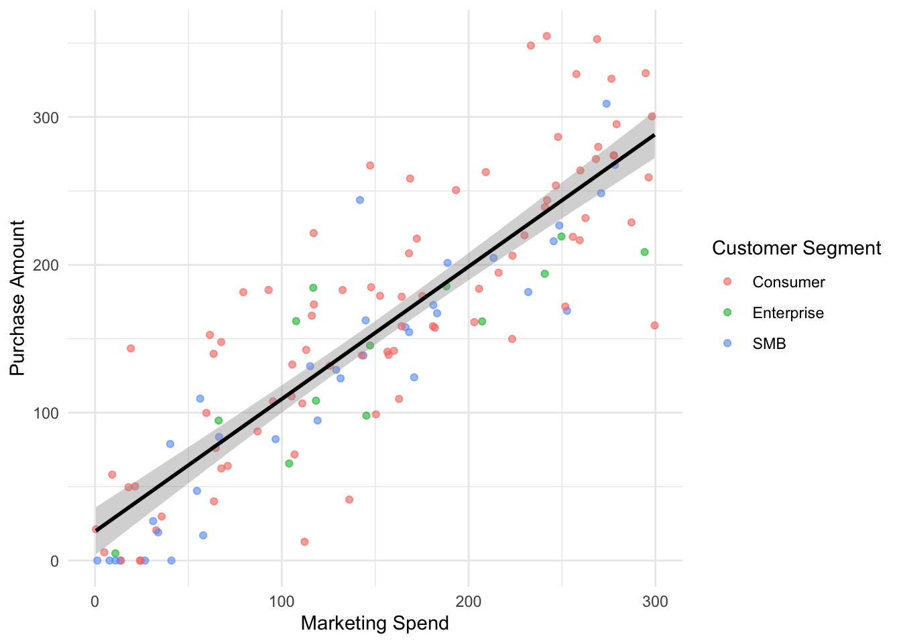
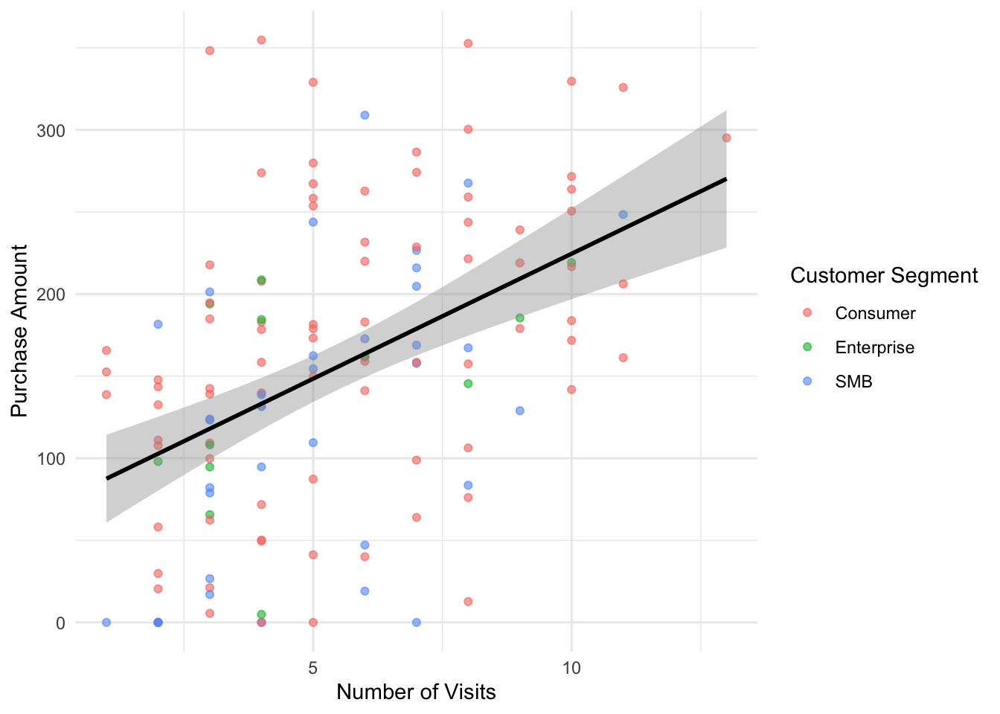

| segment | avg_marketing_spend | avg_visits | avg_purchase_amount | total_customers |
|---|---|---|---|---|
| Consumer | 150.71 | 5.46 | 169.84 | 98 |
| Enterprise | 153.55 | 5.00 | 140.95 | 13 |
| SMB | 140.56 | 5.23 | 122.50 | 39 |
Marketing Campaign Analysis
Introduction
Marketing expenditure plays a crucial role in influencing customer purchasing behaviour in online retail channels. It is important for businesses to understand whether increasing marketing investment leads to significant improvements in sales performance. Efficient allocation of marketing resources is essitial for maximise return on investment, supporting successful product launches, and sustaining long-term business growth. Therefore, this report investigates the relationship between marketing spending and customer purchase amount using campaign data.
Research Question
The report aims to investigate whether higher marketing expenditure per customer leads to increased purchase amounts in an online retail channel during the campaign period. The analysis focuses on identifying the relationship between marketing investment and customer purchasing behaviour across different customer segments, including enterprise, small and medium-sized businesses (SMBs), and consumers. The findings will help determine whether increasing marketing expenditure for personalised marketing campaigns is an effective strategy for improving revenue performance and support more efficient budget allocation.
Dataset Introduction
The marketing campaign dataset records customer interactions and purchasing behaviour during an online retail campaign. The dataset includes information on customer ID, customer registration date, marketing spending, number of visits, purchase amount, customer segment classification, and notes describing customer contact status (e.g., no response, contacted, and returned).
Before analysis, the dataset was cleaned to ensure data accuracy and consistency. Placeholder values such as “N/A” and blank entries were identified as representations of missing data and were converted into proper missing values to enable consistent handling of incomplete information. In addition, the signup_date variable was converted from character format to a standard date format to ensure consistent representation of customer registration dates across the dataset.
Dataset Description
Data detail
The marketing campaign dataset contains 150 observations and 7 variables. The dataset includes numberic, categorical, character, and date-time variables. Numeric variables include marketing_spend, visit, and purchase_amount, while categoric variables includes customer segment. The variables customer_id and notes are stored as character data, and signup_date is recorded as a date variable.
Data summary
The summary statistics in Table 1 show differences in purchasing behaviour across segments in terms of marketing engagement and purchasing outcomes. Consumer customers represent the largest group (98 customers) and have the highest average purchase amount (169.84), indicating stronger overall spending compared with other segments. Enterprise customers show slightly higher average marketing spend (153.55) but a lower average purchase amount (140.95), suggesting that higher spending does not always translate directly into higher purchases. SMB customers have the lowest average purchase amount (122.50) despite moderate levels of marketing spend and visits.
Figure 1 further illustrates the distribution of purchase amounts across customer segments. The boxplot shows that Consumer customers have both higher typical spending and greater variability in purchasing behaviour. Enterprise customers show a similar median purchase amount but a narrower spread, suggesting more consistent spending patterns within this segment. In contrast, SMB customers have a lower median purchase amount and a wider distribution, indicating greater variability and lower purchasing levels. These differences suggest that purchasing behaviour varies across customer segments and provide important context for evaluating marketing performance.

Results

Figure 2 shows a strong positive relationship between marketing spend and purchase amount, indicating that customers who receive higher marketing investment tend to generate higher purchase values. The model explains approximately 74.1% of the variation in purchase amount, suggesting that marketing spending is an important factor influencing customer purchasing behaviour.

Figure 3 shows that the number of visits is also positively related to purchase amount, meaning customers who visit more frequently tend to spend more. However, the relationship appears weaker, with the model explaining only about 20.6% of the variation in purchase amount. This suggests that while customer engagement contributes to purchasing behaviour, marketing spending plays a stronger role in driving purchase outcomes.
Although the results indicate a meaningful relationship between marketing spend and purchase amount, the scatter in the data shows that purchase amounts can still vary at similar levels of marketing spending. Therefore, collecting more campaign data in future periods would help improve the reliability of the analysis and support more confident evaluation of marketing effectiveness.